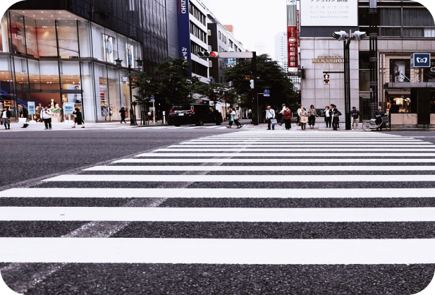
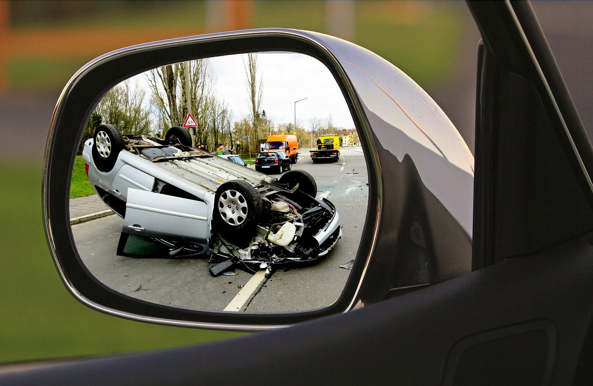
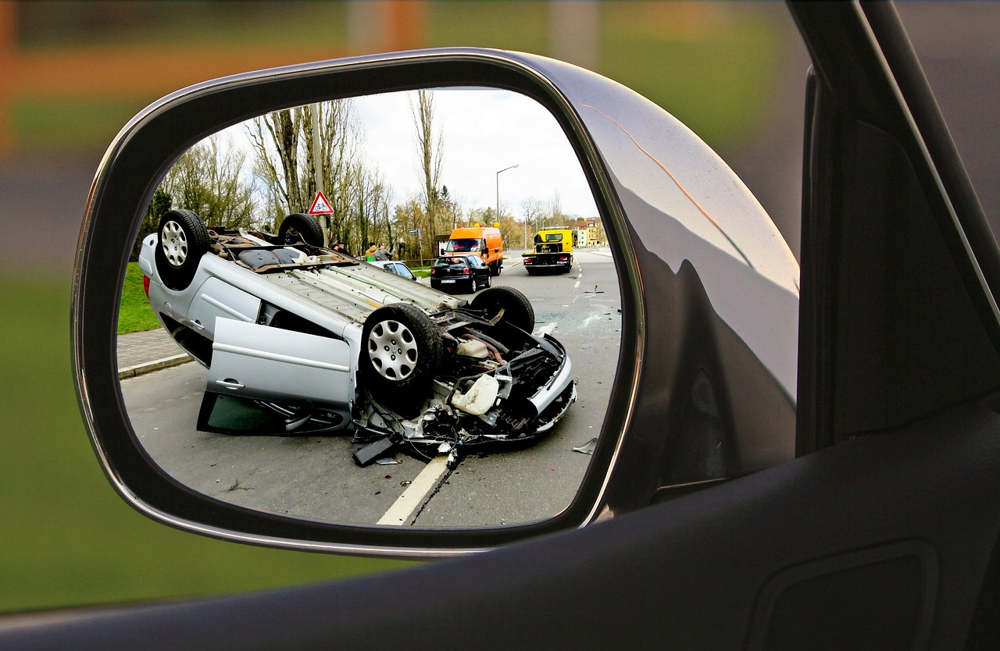

1991년을 정점으로 매년 교통사고 사망자수는 감소했고, 2004년을 기점으로 반감기 *에 진입했습니다. 주요 선진국이 반감기에 접어든 기간이 대체로 20여년이 소요된 반면, 우리나라의 경우 13년만에 교통사고 사망자가 절반 이하로 감소했다는 특징이 있습니다. 꾸준한 교통사고 예방활동 및 국민들의 법규 준수의식 향상으로 사망자 감소추세는 이어가고 있으나 OECD 주요 가입국에 비해 여전히 하위권에 위치하고 있어 범국민적인 교통사고 사망자 줄이기 노력이 필요합니다.
*반감기-교통사고 사망자 수가 반으로 감소하는데 소요된 기간. '91년 13,429명→'04년 6,563명ㅍ


(7,655건. 57.3%)
(1,482건. 11.1%)
(1,449건. 10.9%)
(1,038건. 7.8%)
(751건. 5.6%)
(540건. 4.0%)
(373건. 2.8%)
(63건. 0.5%)
또 교통사고의 주요 원인으로는 안전의무 불이행이 7,655건으로 가장 많았습니다. 신호위반이 1,482건, 안전거리
미확보가 1,449건으로 다음 순을 기록했는데요.
그럼 교통사고를 줄이기 위해 우리가 할 수 있는 것은
무엇일까요?
*재난안전데이터공유플랫폼의 2020년 사회재난-교통사고 현황 통계를 바탕으로 하였음.
약 2명당 한 대의 차
*를
보유하고 있는 나라, 한국
대한민국은 90년 자동차 보급률이 급증한 이후로 편리한 이동수단이 일상이 된 나라입니다. 하지만 그만큼
늘어난 자동차 수의 영향으로 교통사고 문제가 심각한 사회문제로 대두되고 있는데요. 한국의 교통사고 통계를
알아보며 교통사고를
줄일 수 있는 방법을 함께 알아보겠습니다.


*국토부 제공. 2024년 6월 기준 1.96명당 한 대의 차를 보유하고 있다고 밝힘

어떤 교통사고에서
제일 많은 사상자를 냈나
교통사고를 줄이기 위해 할 수 있는 것들

1. 횡단보도 길, 골목길 등 보행 시 ①멈춰 서기 ②좌우 살펴보기 ③주의하며 걷기
2. 교통법규 준수하기
3.
휴대폰, 이어폰 사용 자제하기
4. 어린이 보행자를 보호하기
5. 비 오는 날, 밤에 밝은 색 옷 착용하기
어떻게 줄일까?
한국의 교통사고 통계를 알아보며 교통사고를 줄일 수 있는 방법을 제안합니다.

측면충돌이 1순위로 총 사상자 수 98,726명을 기록했습니다. 후순위로는 기타 (총 사상자 수 62,888명), 추돌 (총 사상자 수 57,379명) 이 사고 유형들은 주로 차대차 사고에서 발생한 것으로 보입니다.
 

사고건수 65,621건
사망자수 317명 총 사상자 수 98,726명
(차대 차)
사고건수 31,939건
사망자수 325명 총 사상자 수 57,379명
(차대 차)
(차대 차)
사고건수 43,459건
사망자수 234명 총 사상자 수 62,888명
1. 주기적으로 자동차 정비하기
2. 운전 중 휴대전화 하지 않기
3. 운전 시 안전거리 확보하기